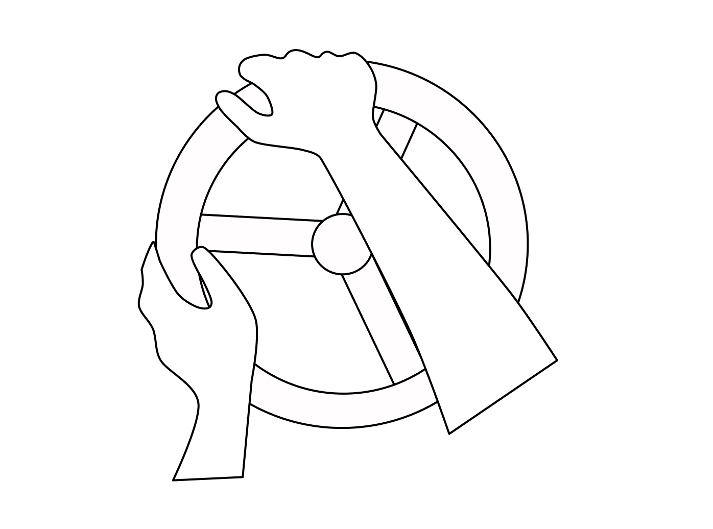
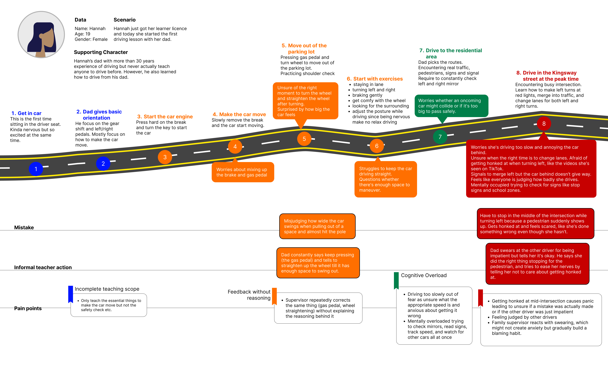

An AI co-coach for informal driving instruction in BC
Amplify the teacher. Don't replace them.

- Supervisor
- Instructor Paul Brokenshire
- Co-author
- Thu Le
- Co-author
- Katrina
- Co-author
- Chisa
- Co-author
- Aasees
- Co-author
- Ethan
In BC, most new drivers learn from a parent, partner, or friend rather than a paid instructor.
These informal teachers are patient and always available, but they teach from memory and improvisation: no lesson plan, no shared record of what was practiced, and no way to see whether the learner is actually improving.
RoadCoach runs across the Tesla display (for the learner) and the Tesla phone app (for the teacher), structured as a three-part loop.
Prototype
ICBC data shows that roughly half of parent-taught learners fail the road test, and the failure rate stays high (around three quarters) even for those who took a few paid lessons.
In our own research, cost was a barrier for 4 of 7 new drivers, and 4 of 6 informal teachers taught purely from personal experience.
A formal instructor we interviewed described informal-taught students arriving with wrong assumptions and missing basics, like entering the bike lane on a right turn and skipping pedestrian and shoulder checks.
The data is taken from the user research conducted during the project and analyzed in form of the user journey maps and personas.

We framed the project around a single question: how might informal learning systems gradually shape confident driving behavior in new drivers?
We studied 13 emerging drivers and 5 informal instructors using two complementary methods:
- Semi-structured interviews, exploring learning experiences, confidence, teaching styles, and barriers.
- Backseat ethnographic observation, watching learner behaviour, supervisor interactions, and real-time confidence and decision-making during actual lessons.
Running both let us compare what people said with what they actually did. We then coded interview transcripts, participant stories, observation notes, and reflection notes: open coding for recurring emotions, behaviors, and challenges, then clustering into themes, comparing across participants, and turning patterns into personas and journey maps.
Seven themes came out of the ethnographic data. The most important ones:
- Shared stress loop. The learner's confidence drops specifically when they sense the teacher's frustration, not just from the mistake itself. This was the single dynamic most responsible for lessons going badly.
- Common need for structure and tracking. Both learners and teachers independently asked for the same thing: structured, real-time guidance plus progress tracking. This was the strongest finding in the data.
- Teaching gaps. Teachers struggle to explain skiltc they do automatically, and fall back on googling rules they've forgotten.
- Inconsistency across teachers. Multiple instructors mean conflicting habits, so learners quietly self-verify instead of asking.
- Reactive, not structured. Teaching defaults to familiar routes and improvised driltc, with no real curriculum.
- Communication breakdown under stress. Teachers say they "stay calm and explain." Learners report the opposite in the moment: tense commands during danger, explanations only afterward.
- Outside traffic as a stressor. Honking and impatient drivers who don't recognize a learner shape the lesson, not just the teacher-learner relationship.
We atco found that basic-skill mistakes rarely cause panic on their own. Stress spikes when a learner misjudges time and space and several situations stack up quickly, which then produces more mistakes. The core pain points underneath it all were lack of skiltc and fear of the external environment and judgment.
Teaching his girlfriend to save money. No lesson plan, doubts his own teaching, and has no resource to fall back on when his approach stops working. He teaches out of necessity in mall parking lots and residential roads after work, and prioritizes avoiding risk over building her confidence, even when it makes lessons tense.
Structured and patient, with an uncle who runs a driving school. She wants real competence, not just test-readiness, breaks concepts down herself, and stays calm even when frustrated. Her frustration comes when progress doesn't carry across sessions.
Each part of the product answers a specific finding from the research.
| Pain point | Our solution |
|---|---|
| Common need for structure and tracking | Before / During / After loop, a skill roadmap, and progression tracking |
| Shared stress loop | Teacher-only coaching in the app, with a minimal learner display |
| Teaching gaps | Drive Deck |
The through-line: keep the teacher as the only person in control, and point the technology at structure and feedback instead. In effect, a self-driving car repurposed into a teaching car.
The goal was never to turn informal teachers into professionatc. It was to bridge the gap between road-test requirements and real-life driving, while reducing the emotional friction that naturally arises between an informal teacher and a learner.